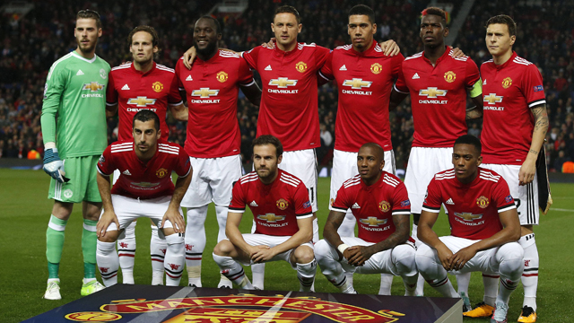

United Today
Unitted today is a completely differnt team as sinc Sir Alex
retired many coaches hav come and gone and one coach that seems
to be stayng for a while is Jose Mourhino who leads a relitively
new starting XI. They're a little slow to start as theirs turmoil
between the coach and the players. They've also had their worst start
in 20 years in the Premier Leauge now sitting at 8th place to
low for a club like Manchester. Today rhey're second
in their group being beaten by Jueventes last
Tuesday.But even if the Red Devils are having a rocky start
, I still stand United.
